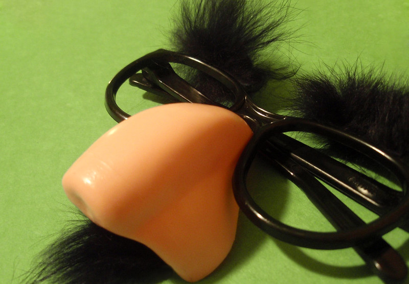

Mr. Badnose's design was confirmed by the game developers to be inspired by novelty store prank glasses. It's supposed to be ironic in a sense, having such a comical look yet a harsh personality. His nose is constantly red due to the weather conditions he puts up with. His scruffy beard and mustache covers most of his mouth, almost as if he's under disguise, even if this is his true authentic self.  "91/365 Happy April Fools Day!" by Mykl Roventine is licensed under CC BY-NC 2.0.'